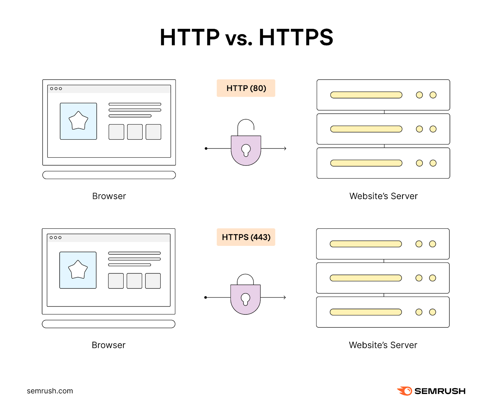
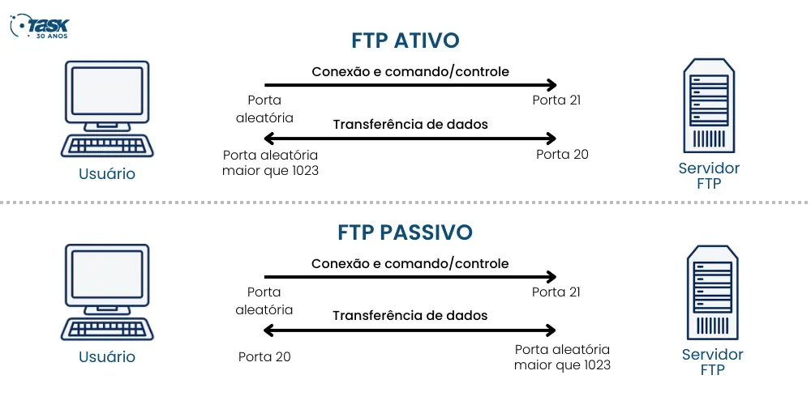

PROTOCOLOS DE REDES
Marcio, Alexandre e Pedro B. - 1°A
| Protocolo | Função | Ação |
|---|---|---|
| HTTP(S) | Protocolo de transferência de hipertexto. | Ver detalhes |
| FTP | Protocolo de transferência de arquivos. | Ver detalhes |
| DNS | Serviço de nomes de domínio. | Ver detalhes |
| TCP | Protocolo de controle de transmissão. | Ver detalhes |
| DHCP | Protocolo de IP automático. | Ver detalhes |
| IP (V4, V6) | Protocolos que ajudam a localizar e conectar dispositivos na internet. | Ver detalhes |
| SMTP | Protocolo que envia e-mails. | Ver detalhes |
| POP3 | Este protocolo é como um “transportador” de e-mails. | Ver detalhes |
| TELNET | É como um telefone para controlar outros computadores de longe. | Ver detalhes |
| IMAP | Protocolo que permite acessar seus e-mails sem precisar baixá-los. | Ver detalhes |
| SSH | É como o TelNet, mas pode acessar os computadores com uma maior segurança. | Ver detalhes |
Mais Informações
| ENTENDA MELHOR: |
HTTP(S) - Hypertext Transfer Protocol (Secure)
O que é HTTP?
O HTTP(HyperText Transfer Protocol) é o principal protocolo usado para enviar dados entre um navegador web e um site, ele define como as mensagens vão ser formatadas e transmitidas (além de especificar como o servidor e o navegador devem responer a diferentes comandos.), tendo também sua versão mais segura o HTTPS(HyperText Transfer Protocol Secure) que utiliza a porta 443 diferenciado-se de sua outra versão que utiliza a porta 80.
Como funciona?
Ele usa um protocolo de criptografia para guardar e proteger as comunicações SSL (Secure Sockets Layer) e TLS (Transport Layer Security), ele usa uma infraestrutura de chave publica assimétrica, normalmente esse sistema usa duas chaves diferentes para criptografar(chave pública: esta chave está disponível para todos que desejam interagir com o servidor de forma segura; chave privada: esta chave é controlada pelo proprietário de um site e é mantida, como o leitor pode imaginar, privada. Essa chave reside em um servidor web e é usada para descriptografar informações criptografadas pela chave pública). O HTTPS é fundamental na proteção de suas informações na web.
Limitações:
HTTP: Não é seguro, pois as informações são transmitidas em textos simples, facilitando a interceptação e roubo de dados; Não oferece metódos de autenticação ou criptografia de dados; Não garante que os dados recebidos sejam os mesmos que foram enviados.
HTTPS: Pode ser mais lento que HTTP devido ao processo de criptografia e decriptação dos dados; A obtenção e renovação de certificados SSL/TLS pode ter custos e exige manutenção regular; Alguns dispositivos e navegadores mais antigos podem não suportar o HTTPS de forma adequada.
Imagem tirada do site: https://www.semrush.com/blog/what-is-https/Fechar detalhes
FTP - File Transfer Protocol
O que é o FTP?
FTP ou File Transfer Protocol (Protocolo de Transferência de Arquivos), é um protocolo de rede utilizado para transferir arquivos entre um cliente e um servidor em uma rede de computadores, como a internet. Criado nos anos 70, ele é um dos métodos mais antigos e ainda amplamente usado para movimentar dados de um local para outro, especialmente em ambientes empresariais e de desenvolvimento de websites. Com o FTP, é possível enviar, baixar, renomear, excluir e organizar arquivos em um servidor remoto.
Embora sua popularidade tenha diminuido um pouco com a ascensão de outros protocolos mais seguros e modernos, como o SFTP(Secure FTP) e HTTP(S), ele ainda desempenha um papel essencial em diversos cenários, especialmente em servidores de hospedagem de sites e ambientes de desenvolvimento.
Como funciona?
O funcionamento do FTP se baseia em uma conexão entre dois pontos principais: um cliente (que normalmente é o dispositivo do usuário) e um servidor de arquivos. Para iniciar uma sessão FTP, o cliente se conecta ao servidor usando credenciais de login, como um nome de usuário e senha. Algumas sessões FTP permitem acesso anônimo, onde não são exigidas credenciais, mas isso depende das configurações de segurança do servidor.
Exemplo de uso:
As transferências em FTP podem ser feitas no modo texto (ASCII) para arquivos de texto ou no modo binário para arquivos executáveis, imagens e outros formatos. O cliente FTP envia uma solicitação de transferência, e o servidor responde, concluindo a ação.
Ferramentas comuns para se usar no FTP:
FileZilla: Um dos clientes FTP mais usados, com interface gráfica simples e suporte a FTPS(FTP Secure) e SFTP(SSH File Transfer Protocol).
WinSCP: Um cliente para Windows que suporta FTP, FTPS e SFTP, também bastante utilizado por desenvolvedores.
Cyberduck: Popular em ambientes Mac, é uma ferramenta gráfica de FTP que também oferece suporte a SFTP, Amazon S3 e outros serviços de armazenamento em nuvem.
Limitações:
FTP não é seguro, pois não possui criptografia e transmite os dados em textos simples, incluindo as senhas.
FTP não oferece recursos avançados de autenticação e controle de acesso.
FTP pode demonstrar problemas de compatibilidade na comunicação com firewalls e NAT (Network Address Translation), exigindo configuração adicional.
Imagem tirada do site: https://blog.task.com.br/o-que-e-ftp/Fechar detalhes
DNS - Domain Name System
O que é DNS?
DNS(Domain Name System ou Sistema de nome de domínio) ele traduz nomes de sites em endereços de IP númericos, como 190.0.2.1, que os computadores utilizam para se comunicar entre si na internet, ele é como uma “agenda de contato”.
Como funciona?
Quando um usuário digita um domínio na barra de endereços do navegador, ocorre uma consulta DNS:
Consulta ao Cache Local, o sistema verifica se o endereço IP correspondente ao domínio já está armazenado no cache do dispositivo;
Servidor DNS Recursivo, Se não estiver no cache, a consulta vai para um servidor DNS recursivo, geralmente configurado pelo provedor de internet;
Servidores Autoritativos, Caso o servidor recursivo também não tenha o endereço, ele consulta servidores autoritativos, incluindo o servidor raiz, o TLD (Top-Level Domain, como .com, .org), e finalmente o servidor autoritativo do domínio específico. Um exemplo de uso é quando abrimos um site web como o youtube ou twitch.
Exemplos:
Acesso a sites: Quando você digita www.wikipedia.org no seu navegador, o DNS resolve esse nome para o IP do servidor que hospeda a Wikipédia, permitindo o carregamento da página.
Serviços de e-mail: Quando você envia um e-mail para alguém com o endereço exemplo@dominio.com, o servidor de e-mail consulta o registro MX do domínio "dominio.com" para descobrir qual servidor é responsável por receber e-mails para esse domínio.
Limitações:
DNS foi projetado sem considerar segurança, sendo suscetível a ataques como cache poisoning e spoofing.
DNS padrão não criptografa consultas, facilitando a interpretação de endereços consultados.
Alterações em registros DNS podem levar um tempo para se propagar globalmente devido ao cache em servidores e dispositivos.

Imagem tirada do site: https://www.maintutoriais.com.br/2022/08/o-que-e-dns-como-funciona-e-sua-importancia.htmlFechar detalhes
TCP - Transmission Control Protocol
O que é TCP?
O TCP garante que os dados enviados de um computador para outro cheguem de forma confiável e ordenada, mesmo em uma rede onde pode haver perdas de pacotes ou atrasos. Ele é orientado à conexão, o que significa que uma conexão é estabelecida entre o remetente e o receptor antes de qualquer dado ser transmitido.
Ele divide os dados em pacotes, e garante que a transmissão seja realizada de forma ordenada e sem erros.
Como funciona?
Estabelecimento de Conexão: O processo de comunicação começa com um "Handshake" (aperto de mão), em que o cliente e servidor negociam parâmetros e verificam se ambos estão prontos para começar a troca de dados.
Transmissão de dados: Após a primeira etapa, os dados podem ser enviados, o TCP, como dito, vai dividir em pacotes, numerando eles para garantir que eles possam entregar os dados para o destinatário de forma correta.
Controle: A velocidade de transmissão dos dados será ajustada de acordo com a capacidade do receptor, evitando o sobrecarregamento do dispositivo de destino, esse controle é feito com o campo "janela deslizante", que indica os segmentos específicos, garantindo a confiabilidade da comunicação
Confirmação do Recebimento: O TCP garante que os dados cheguem ao destinatário, cada vez que o receptor recebe o dado, uma mensagem de confirmação é enviada para o emissor, se alguma parte não chegar, o receptor pode pedir essa mesma parte novamente.
Encerramento de Conexão: Depois dos dados serem enviados e recebidos, os dispositivos se "despedem" para encerrar a comunicação de forma organizada. Isso ocorre em quatro etapas: Ambos confirmam que terminaram de enviar e receber dados, fechando a conexão de maneira segura para liberar espaço na rede.
Limitações:
A confiabilidade do TCP é alcançada com retransmissões e verificações, o que pode tornar o TCP mais lento em conexões de baixa qualidade.
O controle de congestionamento e outros mecanismos em TCP podem sobrecarregar a rede em certos cenários.
Em aplicações com alto tráfego, o balanceamento de carga com TCP pode ser desafiador.

Imagem tirada do site: https://www.net-usb.com/pt/usb-over-ip/what-is-tcp-ip/Fechar detalhes
DHCP - Dynamic Host Configuration Protocol
O DHCP (Dynamic Host Configuration Protocol) é um protocolo de rede que automatiza a atribuição de endereços IP e outras configurações de rede para dispositivos em uma rede, sem precisar configurar manualmente cada dispositivo com um endereço IP, sendo bem prático no mundo atual.
Como funciona o DHCP?
O DHCP opera por meio de um processo de "oferta e concessão" entre o dispositivo que solicita o IP (chamado cliente DHCP) e o servidor DHCP. Quando um dispositivo se conecta a uma rede, ele envia uma mensagem de "descoberta DHCP" em busca de um servidor DHCP. Ao receber essa mensagem, o servidor DHCP responde com uma "oferta DHCP", contendo um endereço IP disponível e outras configurações de rede. Se o dispositivo aceita, ele responde com uma mensagem de "solicitação DHCP" e, finalmente, o servidor confirma a concessão do IP com uma "confirmação DHCP".
Exemplos de uso:
Em redes domésticas, o roteador age como servidor DHCP, atribuindo automaticamente endereços IP para dispositivos como laptops, smartphones e impressoras, sendo a mesma coisa em outros lugares, por exemplo em restaurantes.
Limitações:
DHCP não possui autentificação, o que facilita ataques spoofing e rogue DHCP servers.
Se o servidor DHCP falhar, dispositivos da rede podem perder acesso à internet.
DHCP opera em redes locais e não é roteável, exigindo configurações adicionais em redes grandes ou distribuídas.

Imagem tirada do site: =https://jotelulu.com/pt-pt/blog/o-que-e-dhcp-e-para-que-serve/Fechar detalhes
POP3 - Post Office Protocol 3
O que é POP3?
O POP3 (Post Office Protocol version 3) é um protocolo de recebimento de e-mails que permite que o usuário baixe mensagens do servidor de e-mail para o seu computador ou dispositivo, geralmente para lê-las offline. Esse protocolo é utilizado por programas de e-mail, como Microsoft Outlook e Mozilla Thunderbird, e seu principal objetivo é transferir e-mails do servidor para o dispositivo do usuário, proporcionando acesso direto e armazenamento local das mensagens.
Como funciona?
O funcionamento do POP3 envolve a conexão entre o cliente de e-mail e o servidor de e-mail. Quando o usuário abre o cliente e solicita a verificação de novas mensagens, ele se conecta ao servidor POP3, que verifica as credenciais de login. Após a autenticação, o servidor baixa as mensagens para o dispositivo do usuário e, geralmente, as apaga do servidor, mantendo-as disponíveis apenas no dispositivo em que foram baixadas. Isso permite que os e-mails sejam acessados offline, fazendo com que libere espaço no servidor.
Exemplos:
Um profissional que trabalha em um local com uma conexão inconfiável, pode usar o POP3 para armazenar dados importantes e ver offline, sem medo de perder-las.
Um e-mail corporativo pode ter um baixo armazenamento, podendo ser configurado pelo POP3 para que todas as mensagens sejam baixadas e armazenadas no próprio dispositivo, liberando espaço no servidor.
Limitações:
Como o POP3 não sincroniza os dados entre os dispositivos, se você tentar acessar os e-mails em outro dispositivo, as mensagens baixadas em um não aparecerão no outro.
Já que os e-mails ficam armazenados no dispositivo, caso seja perdido ou danificado (o dispositivo), você perderá as mensagens, a menos que tenha feito um backup.

Imagem tirada do site: https://www.hostgator.com.br/blog/entenda-protocolo-pop3/Fechar detalhes
SMTP - Simple Mail Transfer Protocol
O que é SMTP?
SMTP (Simple Mail Transfer Protocol) é um protocolo de comunicação que permite a troca de emails entre servidores de maneira rápida e organizada. Ele é utilizado para o envio de emails, facilitando o transporte de mensagens eletrônicas de um servidor para outro até que cheguem ao destinatário.
Como funciona?
Quando uma pessoa envia um email, o cliente de email (como Outlook ou Gmail) se comunica com o servidor SMTP configurado para iniciar o processo de envio. O SMTP então verifica o endereço do remetente e do destinatário e tenta estabelecer uma conexão com o servidor SMTP do destinatário. Durante esse processo, o SMTP usa uma série de comandos para confirmar a entrega da mensagem e para verificar erros. Caso o servidor do destinatário esteja disponível, o email é transferido diretamente. Se não estiver, o SMTP retenta a entrega em intervalos regulares ou armazena a mensagem até que o servidor esteja acessível. Isso garante que os emails cheguem ao seu destino, mesmo que o processo leve algumas tentativas.
Exemplos:
Uma loja online envia um boletim informativo para milhares de clientes sobre uma promoção que está tendo, os e-mails vão ser enviados por um servidor SMTP configurado para lidar com esse volume, já que vão ser muitos clientes.
Ao configurar seu e-mail no Outlook, por exemplo, você insere as configurações SMTP para que o aplicativo consiga enviar suas mensagens corretamente.
Também temos as "notificações automáticas", que seria basicamente você fazer uma compra em um site, fazendo com que um e-mail de confirmação seja enviado automaticamente para sua caixa de entrada via SMTP.
Limitações:
SMTP padrão não possui criptografia, tornando-o vulnerável a interceptações, se não for protegido por TLS/SSL.
SMTP original não inclui autenticação forte, facilitando o envio de spam ou e-mails falsos (spoofing).
SMTP não garante a entrega instantânea e pode enfrentar problemas com servidores de retransmissão, retardando o envio de e-mails.

Imagem tirada do site: https://www.techtudo.com.br/noticias/2016/03/o-que-e-sigla-smtp-no-hotmail-saiba-para-o-que-serve.ghtmlFechar detalhes
IP(v4, v6)
O que é e como funciona?
O Protocolo de Internet (IP) é um conjunto de regras que governa como os dados são enviados e recebidos na rede. Todo dispositivo conectado à internet possui um endereço IP que o identifica de forma única, permitindo o roteamento das informações até ele. Existem duas versões de IP em uso: IPv4 e IPv6:
O IPv4: é mais antigo e é representado por quatro números,porém, por causa do crescimento de dispositivos na internet, os endereços IPv4 começaram a se esgotar,fazendo com que criem e o IPv6.
IPv6: é atual e é representado por seis números, criado para lidar com a falta de endereços, utilizando endereços maiores e complexos, permitindo vário bilhões de combinações.
Exemplos de uso:
Os endereços IP são usados diariamente para a navegação na internet, seja para acessar sites, realizar downloads ou assistir a vídeos. Em uma rede doméstica, por exemplo, o roteador utiliza IPs privados em IPv4 para organizar a comunicação entre dispositivos como computadores e smartphones.
Um servidor web de uma grande empresa, como uma loja online, pode usar um endereço IPv6 global unicast para estar acessível por clientes de todo o mundo.
Limitações:
IPv4: A quantidade limitada de endereços IPv4 já está esgotada em muitas regiões, levando à necessidade de técnicas como NAT; Não inclui segurança embutida, tornando-o mais suscetível a ataques.; Dispositivos que só suportam IPv4 precisam de configuração especial para acessar redes IPv6.
IPv6: Muitos dispositivos e redes ainda não suportam IPv6, o que exige coexistência com IPc4 e pode complicar a administração de rede; Os endereços são mais longos e complexos, dificultando a configuração manual e o gerenciamento; Algumas aplicações e serviços mais antigos não são compatíveis com IPv6.
Imagem tirada do site: https://www.avast.com/pt-br/c-ipv4-vs-ipv6-addressesFechar detalhes
TELNET
O que é o TELNET?
O Telnet é um protocolo de rede usado para fornecer acesso remoto a dispositivos ou sistemas através de uma conexão de terminal. Ele foi amplamente utilizado no passado para gerenciar servidores e dispositivos de rede, permitindo que um usuário controlasse um sistema de forma remota, como se estivesse usando o terminal diretamente no dispositivo.
Como funciona?
O funcionamento do Telnet envolve a criação de uma sessão de terminal virtual entre o dispositivo cliente e o servidor. O usuário se conecta ao servidor Telnet fornecendo o endereço IP ou o nome do host e, em seguida, autentica-se com um nome de usuário e senha. Uma vez autenticado, o usuário pode executar comandos e interagir com o sistema remoto como se estivesse localmente conectado. O Telnet usa uma conexão TCP na porta 23, mas, por ser um protocolo sem criptografia, todas as informações, incluindo senhas, são transmitidas de forma legível, o que o torna inseguro para uso em redes públicas ou para tarefas sensíveis.
Exemplos de uso:
Apesar de o Telnet ser considerado obsoleto e inseguro, ele ainda é usado em algumas situações específicas, como para testar conexões de rede e diagnosticar problemas com servidores, portas de rede e dispositivos de rede, devido à sua simplicidade e baixo overhead. Além disso, alguns equipamentos de rede, como roteadores e switches, ainda podem ser acessados via Telnet, embora a tendência seja substituir esse método por alternativas mais seguras, como o SSH.
Limitações:
Telnet transmite dados, incluindo senhas, em textos simples, facilitando a interceptação desses mesmos dados.
Não possui metódos avançados de autentificação, o que aumenta o risco de acessos não autorizados.
Foi amplamente substitúido pelo SSH, que oferece uma conexão segura e encriptada.

Imagem tirada do site: https://tecnoblog.net/responde/o-que-e-telnet/Fechar detalhes
IMAP - Internet Message Access Protocol
O que é o IMAP?
O IMAP( Internet Message Access Protocol) é um protocolo de comunicação utilizado para acessar e gerenciar e-mails em servidores remotos. Ele permite que os usuários leiam, movam, excluam e organizem mensagens de e-mail diretamente no servidor, sem a necessidade de baixar os e-mails para o dispositivo local. O IMAP é amplamente utilizado em serviços de e-mail modernos, pois permite uma sincronização eficiente entre diversos dispositivos, mantendo os e-mails armazenados no servidor.
Como funciona?
Quando um cliente de e-mail se conecta ao servidor via IMAP, ele pode visualizar a caixa de entrada e outras pastas, como "Enviados" ou "Rascunhos", sem precisar baixar todas as mensagens. Ao abrir um e-mail, o conteúdo é baixado temporariamente, mas ele não é removido do servidor, permitindo que o usuário acesse a mesma mensagem em outro dispositivo ou cliente de e-mail sem problemas.
Vantagem do IMAP
Além disso, o IMAP oferece a capacidade de organizar as mensagens em pastas no servidor, facilitando a organização de e-mails de maneira centralizada. As ações realizadas, como marcar
Limitações:
IMAP pode consumir mais recursos de servidor e largura de banda devido à sincronização constante de mensagens.
IMAP armazena cópias das mensagens no servidor, o que pode levar ao uso excessivo de armazenamento.
Embora permita acesso as mensagens offline, muitas funções do IMAP requerem conexão com o servidor para funcionar corretamente.

Imagem tirada do site: https://www.tvisha.com/blog/pop-and-imapFechar detalhes
SSH - Secure Shell
O que é?
O SSH (Secure Shell) é um protocolo de rede usado para acessar de forma segura dispositivos remotos, como servidores, pela internet ou uma rede local. Ele permite que você faça login em uma máquina remota e execute comandos nela, de forma criptografada, o que garante a proteção contra interceptação ou ataques de "man-in-the-middle". O funcionamento do SSH baseia-se em um sistema de autenticação por chave criptográfica ou senha.
como funciona?
Quando você conecta a um servidor usando SSH, o cliente SSH e o servidor realizam um processo de troca de chaves para estabelecer uma conexão segura. O servidor envia sua chave pública para o cliente, e o cliente usa essa chave para criptografar uma mensagem que só pode ser decifrada com a chave privada do servidor. Isso garante que a comunicação entre os dois dispositivos seja confidencial e autêntica.
A autenticação geralmente é feita de duas formas: por senha ou por chave pública. No método de chave pública, o cliente tem uma chave privada no seu computador e uma chave pública armazenada no servidor. Quando o cliente tenta se conectar ao servidor, ele usa a chave privada para criar uma assinatura digital, que o servidor verifica usando a chave pública associada. Se a assinatura for válida, a conexão é estabelecida sem a necessidade de uma senha.
Vantagens do SSH
Uma das vantagens do SSH é que ele também permite o encaminhamento de portas (port forwarding), o que significa que você pode redirecionar tráfego de rede de forma segura entre o cliente e o servidor. Isso é útil, por exemplo, para acessar serviços internos de um servidor sem expô-los diretamente à internet.
Limitações:
Em conexões de internet com latência alta, o SSH pode ter desempenho prejudicado devido à sobrecarga da criptografia.
A configuração do SSH para autentificação via chave pode ser complicada para usuários inexperientes.
Embora seguro, o SSH pode ser alvo de ataques de força bruta caso não sejam adotadas boas práticas de segurança.
Imagem tirada do site: https://www.hostinger.com.br/tutoriais/como-funciona-o-sshFechar detalhes